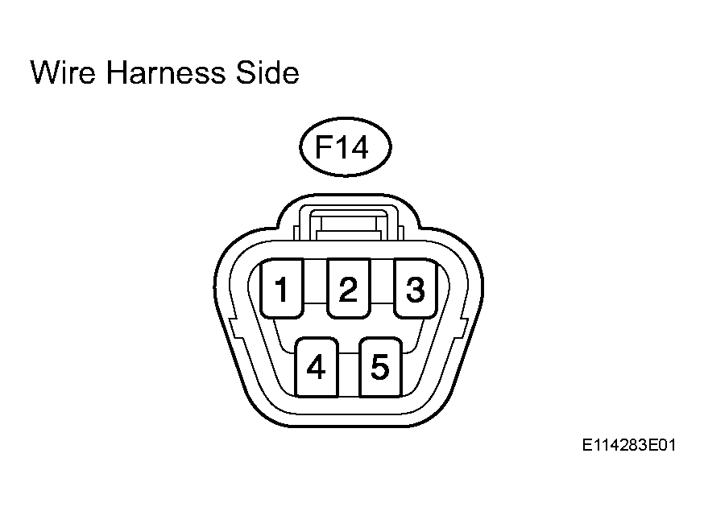

On-Vehicle Inspection
- CHECK SPEEDOMETER
- Check operation.
- Using a speedometer tester, check that the speedometer reading is within the allowable range shown in the table below. Also, check for proper operation of the odometer.
Reference
SPEEDOMETER ALLOW ABLE RANGEStandard Indication Allowable Range 20 mph 19.5 to 22.5 mph 40 mph 39.5 to 44 mph 60 mph 61.5 to 65.5 mph 80 mph 82 to 86.5 mph 100 mph 103 to 108 mph NOTE: Do not use worn, under inflated or overinflated tires, as the speedometer reading will be inaccurate. - Check the deflection width of the speedometer indicator.
Reference:
Below 0.3 mph
If the result is not as specified, the speedometer may have a malfunction.
- Using a speedometer tester, check that the speedometer reading is within the allowable range shown in the table below. Also, check for proper operation of the odometer.
- Check operation.
- CHECK TACHOMETER
- Check operation.
- Connect a tune-up test tachometer, and start the engine.NOTE:
- Do not reverse the connections of the tachometer. This will damage its transistors and diodes.
- When removing or installing the tachometer, be careful not to drop or strike it.
- Compare the tester tachometer values and vehicle tachometer values under the following conditions:
- Vehicle battery voltage is 13.5 V
- Ambient temperature is 25°C (77°F)
OK
TACHOMETER ACCEPTABLE RANGEStandard Tachometer Indication (rpm) Acceptable Range (rpm) Data in ( ) are for reference only 700 630 to 770 1,000 (900 to 1,100) 2,000 (1,850 to 2,150) 3,000 2,800 to 3,200 4,000 (3,800 to 4,200) 5,000 4,800 to 5,200 6,000 (5,750 to 6,250)
If the result is not as specified, the tachometer may have a malfunction.
- Connect a tune-up test tachometer, and start the engine.
- Check operation.
- CHECK FUEL RECEIVER GAUGE
- Disconnect the F14 gauge connector.
- Turn the ignition switch ON, and then check the position of the receiver gauge needle.
OK:
Fuel receiver gauge indicates E
- Connect terminals 2 and 3 of the wire harness side connector.
- Turn the ignition switch ON, and then check the position of the receiver gauge needle.
OK:
Fuel receiver gauge indicates F

Courtesy of © TOYOTA, LICENSE AGREEMENT TMS1002If the result is not as specified, the combination meter may have a malfunction.
- CHECK FUEL LEVEL WARNING LIGHT
- Disconnect the F14 gauge connector.
- Turn the ignition switch ON, and then check that the fuel receiver gauge indicates E and that the fuel level warning light turns on.
OK:
Fuel level warning light turns on
If the result is not as specified, the combination meter may have a malfunction.
- CHECK LOW OIL PRESSURE WARNING LIGHT
- Disconnect the O1 switch connector.
- Connect the terminal 1 of the wire harness side connector to the body ground.
- Turn the ignition switch ON, and then check that the low oil pressure warning light turns on.
OK:
Low oil pressure warning light turns on
If the result is not as specified, the combination meter may have a malfunction.
- CHECK BRAKE WARNING LIGHT
- Check the parking brake warning light.
- Disconnect the P3 switch connector.
- Connect the terminal 1 of the wire harness side connector to the body ground.
- Turn the ignition switch ON, and then check that the warning light turns on.
OK:
Warning light turns on.
- Check the brake fluid level warning light.
- Disconnect the B2 switch connector.
- Connect terminals 1 and 2 of the wire harness side connector.
- Turn the ignition switch ON, and then check that the warning light turns on.
OK:
Warning light turns on.
- Check the parking brake warning light.
- CHECK SEAT BELT WARNING LIGHT FOR DRIVER SIDE
- Disconnect the B7 switch connector.
- Connect terminals 1 and 3 of the wire harness side connector.
- Turn the ignition switch ON, and then check that the warning light turns on.
OK:
Seat belt warning light for driver side turns on.
If the result is not as specified, the combination meter may have a malfunction.
- CHECK SEAT BELT WARNING LIGHT FOR PASSENGER SIDE
- Disconnect the B8 switch connector.
- Connect terminals 1 and 3 of the wire harness side connector.
- Turn the ignition switch ON, and then check that the warning light blinks.
OK:
Seat belt warning light for passenger side blinks.
If the result is not as specified, the integration control and panel may have a malfunction.
- CHECK SEAT BELT WARNING REMINDER BUZZER FOR DRIVER SIDE
- Disconnect the B7 switch connector.
- Connect terminals 1 and 3 of the wire harness side connector.
- Turn the ignition switch ON, and check that the warning buzzer sounds.
OK:
Warning buzzer sounds.
- CHECK KEY REMINDER WARNING BUZZER
- Disconnect the U1 switch connector.
- Connect terminals 1 and 2 of the wire harness side connector.
- Disconnect the D5 switch connector.
- Connect terminals 1 and the body ground of the wire harness side connector.
- Turn the ignition switch ON, and check that the warning buzzer sounds.
OK:
Warning buzzer sounds.
- CHECK LIGHT REMINDER WARNING BUZZER
- Disconnect the D5 switch connector.
- Connect terminal 1 and the body ground of the wire harness side connector.
- Turn the light control switch to HEAD or TAIL, and then check that the warning buzzer sounds when the ignition key is not inserted into the key cylinder.
OK:
Warning buzzer sounds.